Session 是有邊界的，先搞懂邊界在哪裡
Matt 開宗明義說這門課會全程用 Claude Code 當示範工具，理由很坦白：這是他自己最常用、也是目前最流行的 harness，但整門課的設計原則是 harness-agnostic——你完全可以換成任何其他能在 CLI 裡跑的工具，觀念是通的。這個定位很關鍵：這一章教的不是「Claude Code 這個產品」，而是「所有 agentic coding harness 共通的一套心智模型」，Claude Code 只是拿來示範的載體。
實際操作從最基本的地方開始：在 VS Code 的整合終端機裡打開 Claude，跑一次 `/terminal-setup` 把 shift-enter 換行的按鍵綁定裝好（沒裝這個，windows subsystem Linux 之類的環境會出現按鍵行為怪怪的問題）。接著是三個貫穿整章、也貫穿整門課的指令：`/usage` 看目前這個 session、這一週還剩多少額度；`/context` 看目前 context window 裡塞了什麼——系統提示詞佔多少 token、skills 佔多少、對話訊息又佔多少，而像 Opus 4.6 這種模型的 context window 上限是一百萬 token；`/clear` 則是把整個 context 歸零，清空前後的 token 數會有明顯落差（示範中清完只剩一百多 token 的底噪）。
這裡帶出一個貫穿全課的觀念：模型是無狀態的，所謂「Claude 記得我們聊過什麼」，靠的完全是 context window 裡塞了哪些訊息。`/clear` 之所以有效，是因為它真的把這份記憶砍掉重練，不是換個話題那麼簡單。除了指令，還有兩個手感層級的操作值得記住：按兩次 `Ctrl+C` 直接離開整個 session、開一個全新的乾淨對話；按一次 `Escape` 則是打斷 Claude 正在執行的動作，中斷後它會在對話裡插入一句「被打斷了，接下來要做什麼」，讓你可以立刻改變方向而不必等它把手上的事做完。這組「清空 vs 打斷」的差異其實是使用 agent 的第一堂課：清空是把整個大腦重灌，打斷只是喊一聲等一下——分不清這兩者的差別，你很容易在該喊等一下的時候整組重來，浪費掉原本有價值的對話脈絡。

餵資料的方式，決定了 Claude 看得多準
知道怎麼開關 session 之後，下一層是怎麼把你想讓 Claude 知道的東西，準確地放進它的視野裡。最基本的是用 `@` 加檔名做模糊搜尋，例如打 `@` 之後輸入 `drizzle.config` 或搜尋 `routes.ts`，按 Enter 或 Tab 把檔案直接拉進輸入框。這個動作看似跟叫 Claude 自己去讀檔案沒兩樣，但差別在於：用 `@` 直接把檔案內容塞進第一次的請求裡，中間完全省掉一次「Claude 呼叫 read 工具、伺服器再回傳結果」的來回，尤其在你要一次丟一份完整規格文件進去時特別有感。
另一個容易被忽略的小功能是 `Ctrl+S` 把還沒送出的 prompt 暫存起來（畫面上會出現一個小小的 stashed 標記），讓你可以先插入別的指令、等處理完再把原本寫到一半的內容叫回輸入框繼續完成。這在你正在給 Claude 回饋、但話講到一半又想先確認別的事情時特別實用，不用擔心手上寫好的措辭被打斷就整段消失。此外，圖片也可以直接複製貼上到終端機的輸入框裡——課程示範貼了一張斯洛維尼亞 Bled 湖的照片，Claude 準確認出地點與湖畔教堂，說明就算在純文字介面的 terminal 裡，多模態輸入也是隨手可用的功能，不必額外開視窗上傳。
輸入端解決之後，緊接著的問題是：Claude 改完程式碼，你要怎麼審查？這正是 IDE 整合派上用場的地方。跑 `/ide` 指令可以看到目前連接到哪個編輯器（課程裡是裝了 Claude Code 的 VS Code 擴充套件），連上之後，原本只能在終端機裡用純文字 diff 呈現的修改，會直接開在 VS Code 的 diff 檢視畫面裡，可以捲動、可以逐行看清楚改了什麼，按下「Accept proposed changes」或直接存檔就等於同意這次修改。Matt 特別強調，這個 diff 審查功能是他選擇全程在 VS Code 裡跑 Claude Code 的主要原因，用他自己的話說，這是他九成九的時間裡真正會用到的 IDE 整合功能——換句話說，IDE 整合不是錦上添花的花俏功能，而是讓「盯著 agent 做的每一步」這件事變得可持續的基礎設施。
對話跟程式碼，都可以往回走
七支單元裡最容易讓新手安心的一支，是講「時間軸」的那支。連按兩下 `Escape` 會進入 rewind 模式，畫面上會列出這個 session 裡的每一個節點，讓你選擇要回到哪一步。選定之後還有三個選項：只還原程式碼跟對話（回到那個修改發生之前的完整狀態）、只還原對話但保留現在的程式碼、或者只還原程式碼但保留對話內容——課程示範最常用的是第一種，整套回滾到修改前的狀態。這代表就算 Claude 已經改壞了檔案、對話也已經歪掉，你永遠有一條路可以退回去重新開始，不必砍掉整個 session 重練。
除了 rewind，Claude Code 還會把每個 session 存在本地，就算按兩次 `Ctrl+C` 整個離開，之後也能用 `claude resume <session-id>` 直接接回離開前的狀態，或者重開一個新的 Claude 之後用 `/resume` 從清單裡挑出想接續的舊對話，甚至更省事地用 `claude --continue` 接回上一次的 session。這三種恢復方式合起來說明一件事：session 的持久性不是為了防止你手殘關錯視窗，而是讓「先探索、發現不對再退回去」變成一個低成本的動作——沒有這個安全網，agent 產出的每一步都會變得綁手綁腳，因為你不敢輕易嘗試怕回不去。
讓 Claude 自己去跑指令、自己看結果
單純寫程式碼的 agent 跟一個真正能工作的 agent，差別就在能不能跑指令、看到回饋、再根據回饋修正。輸入 `!` 會進入 bash 模式，之後打的任何內容都會被當成 shell 指令直接執行，執行結果會進到 Claude 的 context 裡，例如跑一次 `npm run type check` 把錯誤訊息攤在它面前，讓它自己判斷「原來是 Zod 裝在 package.json 裡但沒有實際 `npm install`」。這種做法適合「跑完就結束」的一次性指令。
但長時間執行的指令（最典型的是 `npm run dev` 這種開發伺服器）不能用同一套邏輯，因為它不會自己結束。這時候在指令跑起來之後按 `Ctrl+B` 就能把它丟到背景，畫面上會出現一個背景任務的提示，輸出全部寫進本地的 log 檔，之後可以隨時用方向鍵切過去查看即時輸出（課程示範看到伺服器跑在 `localhost:5175`），確認沒問題再切回 Claude Code 繼續工作。這對除錯特別有用：Claude 可以一邊看著開發伺服器的 log，一邊在 UI 上試東西或發 curl 請求，即時比對行為跟日誌。
還有一種情境是你根本不想讓 Claude 看到某個指令的輸出、或者想暫時完全離開它去做別的事，這時候按 `Ctrl+Z` 可以把整個 Claude Code 進程掛起（suspend），底下的 terminal 完全恢復成你自己的操作環境，跑什麼指令 Claude 都看不到；等你想回去，打 `fg` 就能把 Claude Code 原封不動地叫回來，狀態完全沒有流失。這三種模式——前景跑給 Claude 看、背景跑但仍在它視野裡、掛起完全脫離它視野——本質上是在管理「agent 對你環境的可見度」，可見度的粒度愈細，你能放心交給它自主判斷的空間就愈大。
權限，是這整章真正的核心命題
前面四層講的都是操作手感，但真正決定你敢不敢放手讓 Claude 自主工作的，是這一章壓軸的權限模型。出發點很直白：如果把無限權限交給一個 agent，你當然會擔心它哪天手滑把整個檔案系統刪掉。Claude Code 的預設策略是自己先設下嚴格邊界——像 `echo hello` 這種絕對安全的指令會直接放行，但一碰到像 `pnpm type check` 這種會實際改動或耗費資源的指令，就會跳出確認畫面，列出具體指令內容跟它想執行的理由，讓你三選一：這一次允許、以後在這個專案裡都允許同類指令、或者拒絕並直接告訴它改用別的做法（例如把 `pnpm type check` 換成 `npx tsc`）。
一旦你選了「以後都允許」，這個偏好不是憑空記在對話裡，而是實際寫進 `.claude/settings.local.json` 這個檔案的 `permissions.allow` 陣列裡。這代表你也可以反過來自己動手編輯這個檔案，提前把想放行的規則寫進去，例如只允許特定的 `pnpm type check`，或用萬用字元放行所有 `pnpm` 開頭的指令；反方向也可以用 `deny` 陣列直接封鎖某些永遠不該自動執行的指令，像是 `git push` 加萬用字元封死自動推送。這套機制不只管 bash 指令，Claude 要做網路搜尋、要 fetch 網頁內容確認本地程式碼跟官方文件是否一致時，一樣要走這套允許/拒絕的流程，一樣會被記錄進同一份設定檔。
`settings.local.json` 預設會被 `.gitignore` 排除，只對你個人生效——但只要把檔名改成 `settings.json`，這份權限清單就能提交進版本控制、跟著整個團隊共享，任何人第一次在這個 repo 裡跑 Claude 就自動繼承同一套放行規則，不必每個人重新摸索一遍。這個從「個人偏好」升級成「團隊規範」的開關，才是整套權限模型真正有意思的地方——它把一次性的人工確認，轉換成可以沉澱、可以複用的組織記憶。
除了手動維護的允許清單，Claude Code 現在還提供四種操作模式，用 `Shift+Tab` 可以循環切換：manual mode（一律手動確認）、accept edit mode、plan mode，以及 Matt 說自從推出後就變成他個人預設的 auto mode。auto mode 的做法是額外呼叫一個 LLM 分類器——他推測背後很可能是用 Haiku 這種輕量模型——先判斷你要跑的指令是否安全，安全就直接放行不必你介入。這個機制會多花一點 token 跟時間去做分類，分類器也不是完美的，Matt 就提到它有時候會放行資料庫遷移這種他其實不想自動發生的操作，也會在建立 GitHub issue 這種他樂見自動執行的事情上卡住。但整體而言他認為分類器抓得住大部分真正危險的事，例如遞迴刪除檔案系統這種「永遠不該發生」的操作，且不會過度推高使用額度，所以評估下來是個他願意接受的折衷。值得留意的是，這套分類器只在 `settings.json` 裡沒有現成規則時才會被呼叫——harness 會先檢查設定檔裡有沒有寫死的允許規則，寫死的規則優先生效、完全不用經過分類器，這也是為什麼提前把常用指令寫進 `settings.json` 依然值得做，能讓 auto mode 運作得更快、更省。